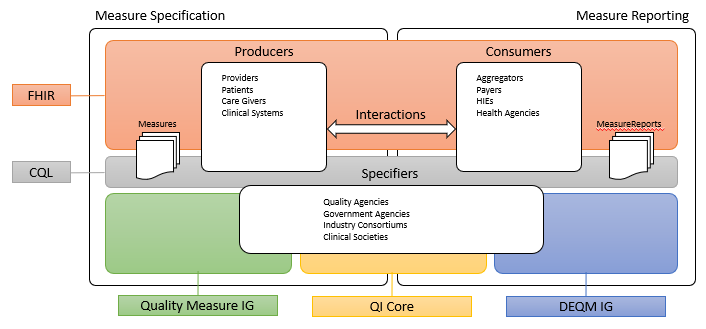
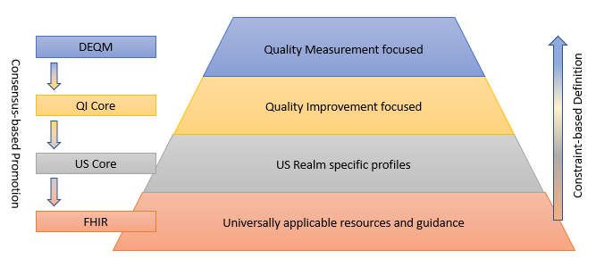
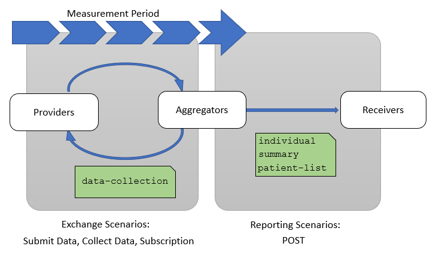

TODO: Index...
This implementation guide describes an approach to representing electronic Clinical Quality Measures (eCQMs) using the FHIR Clinical Reasoning Module and Clinical Quality Language (CQL) in the U.S. Realm. However, this Implementation Guide can be usable for multiple use cases across domains, and much of the content is likely to be usable outside the U.S. Realm.
The implementation guide is based upon the previous generation of eCQM representation standards, the HL7 V3-based Health Quality Measure Format (HQMF) and accompanying implementation guides. As an HL7 FHIR Implementation Guide, changes to this specification are managed by the sponsoring Clinical Quality Information Work Group and are incorporated as part of the standard balloting process.
Clinical quality measures (CQMs) are tools that help measure and track the quality of health care services that eligible clinicians (ECs), eligible hospitals (EHs), and critical access hospitals (CAHs) provide. Measuring and reporting CQMs helps to ensure that our health care system is delivering effective, safe, efficient, patient-centered, equitable, and timely care. CQMs measure many aspects of patient care, including:
Quality Improvement Ecosystem
TODO: Quality Improvement Ecosystem Text
This implementation guide is part of a larger FHIR-based quality improvement and quality measurement standards landscape, depicted in the following diagram:
The left side of the quality measurement standards landscape diagram depicts the activities and standards associated with measure specification, while the right side depicts measure reporting.
Measure specification involves the end product of the measure development process, a precisely specified, valid, reliable, and clinically significant measure specification to support accurate data representation and capture of quality measures.
Measure reporting involves the data collection and aggregation, calculation and analytics, and ultimately reporting of quality measures.
Producers in the diagram represent the various stakeholders involved in the creation of healthcare data. Producers can include providers and provider systems; patients, care teams, caregivers, and patient engagement systems; and other related clinical systems such as laboratory, clinic, and hospital information systems that are primary producers of patient healthcare information.
Consumers in the diagram represent the various stakeholders involved in the consumption and use of healthcare data. Consumers can include data routers and aggregators, payers, health information exchanges and health integrated networks, as well as public health and other healthcare-related agencies.
Specifiers in the diagram represents the various stakeholders involved in the specification of quality measures for use in healthcare quality measurement and reporting. Specifiers can include quality agencies, public health, and other healthcare-related agencies, industry consortiums concerned with improving care quality, and clinical professional societies. Specifiers may also be institutions and clinics using the quality measurement standards to specify quality measures for use in their own environments and quality improvement initiatives.
The shaded areas underlying the stakeholders depict the various standards involved:
Fast Healthcare Interoperability Resources, or FHIR, is an HL7 platform specification for healthcare that supports exchange of healthcare information between systems. FHIR is universally applicable, meaning that it can be used in a broad variety of implementation environments. The platform provides layers of implementation that support foundational protocols; base implementation functionality such as conformance and terminology; administrative functionality to represent patients, care teams, locations, and organizations; healthcare processes including clinical and diagnostic information, as well as medication, workflow, and financial; and finally, a clinical reasoning layer that provides support for the representation of knowledge and reasoning about healthcare.
The quality measurement standards landscape makes use of all these layers of FHIR: the foundational and implementation layers to define interactions and profiles; the administrative and process layers to represent the data of interest for quality measurement; and the clinical reasoning layer to specify and support evaluation and reporting of quality measures.
Clinical Quality Language, or CQL, is an HL7 cross-paradigm specification that defines a high-level, domain-specific language focused on clinical quality and targeted for use by measure and decision support artifact authors. In addition, the specification describes a machine-readable canonical representation called Expression Logical Model (ELM) targeted at implementations and designed to facilitate sharing and evaluation of clinical knowledge.
This ability to render clinical knowledge in a high-level human-readable form as well as an intermediate-level, platform-independent machine-readable form makes CQL an ideal mechanism for specifying the criteria involved in quality measures.
The FHIR Quality Measure Implementation Guide defines conformance profiles and guidance focused on the specification of quality measures using the FHIR Measure and Library resources. The IG does not standardize the content of any particular measure, rather it defines the standard approach to the representation of that content so that quality measure specifiers can define and share standardized FHIR-based electronic Clinical Quality Measures (eCQMs).
The Quality Improvement Core Implementation Guide, or QI-Core IG, defines a set of FHIR profiles with extensions and bindings needed to create interoperable, quality-focused applications. Importantly, the scope of QI Core includes both quality measurement and decision support to ensure that knowledge expressed can be shared across both domains. QI Core is derived from US Core, meaning that where possible, QI Core profiles are based on US Core to ensure alignment with and support for quality improvement data within healthcare systems in the US Realm.
The Data Exchange for Quality Measures Implementation Guide, or DEQM, provides a framework that defines conformance profiles and guidance to enable the exchange of quality information and quality measure reporting. The DEQM expects to use quality measures specified in accordance with the Quality Measure IG and QI Core.
The quality improvement ecosystem covers every aspect of the healthcare delivery system, and needs to be able to represent information across that entire spectrum. FHIR provides a foundation for representation of this information in a universally applicable way. In particular cases, more specificity is required to capture the intended meaning of healthcare information. As FHIR is more and more broadly adopted, consensus among participating stakeholders on the use of particular profiles and patterns enables semantic interoperability for more use cases.
Within the US Realm, US Core profiles comprise this base consensus, and although it enables a variety of interoperability use cases, the profiles do not represent all of the requirements for quality improvement. The QI Core profiles are derived from US Core and provide this additional functionality.
There are occassional instances where additional specificity or functionality is required explicitly for quality measurement, or a particular component within a quality measure. In these cases, additional profiles are defined within the DEQM, or by stakeholders such as measure developers or implementers. For example, the Medication Reconciliation Post Discharge measure example included in this implementation guide references the HEDIS Implementation Guide, which defines profiles specific to that particular HEDIS measure.
The following diagram depicts this data model standards landscape:
As illustrated, FHIR provides the foundation, and sets of profiles are built on top of FHIR that provide more and more focused use cases by constraining profiles and extending functionality to cover gaps. While the additional layers are necessary to represent specific operations and provide space for agreement among relevant stakeholders, the consensus-based standards development process is used to suggest changes to the layers below, resulting in an ever-broadening umbrella of interoperability.
This layering of profiles balances the relative adoption and implementation maturity of FHIR and the data representation requirements of the use cases involved, guided by the following principles:
There are three broadly used and fully published versions of the FHIR specification:
The implementation guides in this landscape are currently focused on FHIR STU3, with the plan to produce R4 versions once the US Core and QI Core profiles have been updated to R4.
This implementation guide describes two groups of quality reporting scenarios. Exchange scenarios, focused on exchanging subsets of the data-of-interest for a particular measure or set of measures throughout the reporting period, and Reporting scenarios, focused on communicating the results of a quality measure at the end of a reporting period as part of a quality improvement initiative.
Exchange scenarios are used to exchange subsets of the data-of-interest for a measure or set of measures throughout the measurement period. These scenarios enable providers and quality stakeholders such as payers, accountable care organizations, and other secondary use partners to keep better track of how patients are performing with respect to a particular quality measure during the measurement cycle.
The three exchange scenarios are:
Reporting scenarios are used to report the results of quality measures on patients or populations at the end of a reporting period. Measure reports are provided to attest the standard of care given to patients in a population as measured by specific quality measures. The measures are typically identified as part of a quality improvement program or initiative by a payer or other quality improvement stakeholder.
The three reporting scenarios are:
This Guide is divided into several pages which are listed at the top of each page in the menu bar: